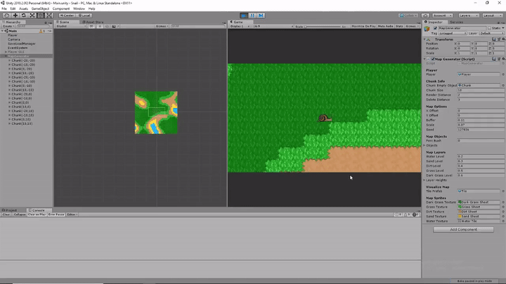

Tranquility
This project was heavily inspired by the famous Stardew Valley. When I initially began this project I was also learning Unity and C# along the way, so it took me around a month to randomly generate a perlin noise image and map different tiles to certain levels of the image.

After I got the very basic map creation working, I got to work making the tiles know who their neighbors are. This allows for the tile to change their sprite to match up with similar neighbors so it looks more organic.
For Tranquility, I spent a huge amount of time making the sprites and music. Everything you see below was made by me and took around two months to create (music and sprites). Coding the map took upwards of four to five months to complete because I was still learning how Unity worked.

Here is the main menu music that I created in LMMS. Surprisingly I made this song within an hour. I guess I got lucky coming up with a simple melody that I enjoyed and felt fit the overall theme.
If you want to see more than just gif's of the game, check out my youtube channel here. You can also check out this embedded video that shows more of the game.